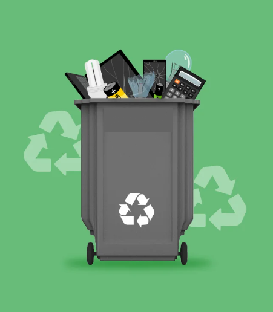

Bahrain Recycling Initiatives
The Kingdom of Bahrain places the protection of the environment and its resources and the preservation of biodiversity at the forefront of its development priorities.
The government of the Kingdom has strengthened its interest in protecting the environment and placed it within its program, which emphasizes achieving environmental sustainability, improving the efficiency of the use and rationalization of resource and energy consumption, developing environmental impact assessment mechanisms for economic projects, and encouraging the production, use and investment in renewable energy.
Local E-waste Collectors
1. Zain Bahrain:
Website link: ZainTellecommunications E-Waste Recycling
Find on Map: ZainBH.map
2. Crown Industries Recycling:
Website link: Crown Industries Recycling
Find on Map: crownbahrain.map
Contact Me / FAQs
